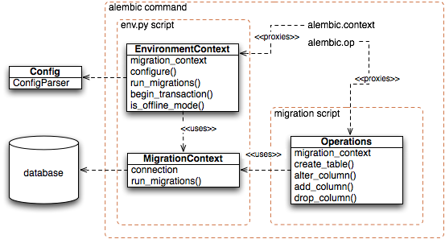

This section describes some key functions used within the migration process, particularly those referenced within a migration environment’s env.py file.
The three main objects in use are the EnvironmentContext, MigrationContext, and Operations classes, pictured below.
An Alembic command begins by instantiating an EnvironmentContext object, then making it available via the alembic.context proxy module. The env.py script, representing a user-configurable migration environment, is then invoked. The env.py script is then responsible for calling upon the EnvironmentContext.configure(), whose job it is to create a MigrationContext object.
Before this method is called, there’s not yet any database connection or dialect-specific state set up. While many methods on EnvironmentContext are usable at this stage, those which require database access, or at least access to the kind of database dialect in use, are not. Once the EnvironmentContext.configure() method is called, the EnvironmentContext is said to be configured with database connectivity, available via a new MigrationContext object. The MigrationContext is associated with the EnvironmentContext object via the EnvironmentContext.get_context() method.
Finally, env.py calls upon the EnvironmentContext.run_migrations() method. Within this method, a new Operations object, which provides an API for individual database migration operations, is established within the alembic.op proxy module. The Operations object uses the MigrationContext object ultimately as a source of database connectivity, though in such a way that it does not care if the MigrationContext is talking to a real database or just writing out SQL to a file.
The EnvironmentContext class provides most of the API used within an env.py script. Within env.py, the instantated EnvironmentContext is made available via a special proxy module called alembic.context. That is, you can import alembic.context like a regular Python module, and each name you call upon it is ultimately routed towards the current EnvironmentContext in use.
In particular, the key method used within env.py is EnvironmentContext.configure(), which establishes all the details about how the database will be accessed.
Represent the state made available to an env.py script.
EnvironmentContext is normally instantiated by the commands present in the alembic.command module. From within an env.py script, the current EnvironmentContext is available via the alembic.context datamember.
EnvironmentContext is also a Python context manager, that is, is intended to be used using the with: statement. A typical use of EnvironmentContext:
from alembic.config import Config
from alembic.script import ScriptDirectory
config = Config()
config.set_main_option("script_location", "myapp:migrations")
script = ScriptDirectory.from_config(config)
def my_function(rev, context):
'''do something with revision "rev", which
will be the current database revision,
and "context", which is the MigrationContext
that the env.py will create'''
with EnvironmentContext(
config,
script,
fn = my_function,
as_sql = False,
starting_rev = 'base',
destination_rev = 'head',
tag = "sometag"
):
script.run_env()
The above script will invoke the env.py script within the migration environment. If and when env.py calls MigrationContext.run_migrations(), the my_function() function above will be called by the MigrationContext, given the context itself as well as the current revision in the database.
Note
For most API usages other than full blown invocation of migration scripts, the MigrationContext and ScriptDirectory objects can be created and used directly. The EnvironmentContext object is only needed when you need to actually invoke the env.py module present in the migration environment.
Construct a new EnvironmentContext.
| Parameters: |
|
|---|
Return a context manager that will enclose an operation within a “transaction”, as defined by the environment’s offline and transactional DDL settings.
e.g.:
with context.begin_transaction():
context.run_migrations()
begin_transaction() is intended to “do the right thing” regardless of calling context:
Note that a custom env.py script which has more specific transactional needs can of course manipulate the Connection directly to produce transactional state in “online” mode.
An instance of Config representing the configuration file contents as well as other variables set programmatically within it.
Configure a MigrationContext within this EnvironmentContext which will provide database connectivity and other configuration to a series of migration scripts.
Many methods on EnvironmentContext require that this method has been called in order to function, as they ultimately need to have database access or at least access to the dialect in use. Those which do are documented as such.
The important thing needed by configure() is a means to determine what kind of database dialect is in use. An actual connection to that database is needed only if the MigrationContext is to be used in “online” mode.
If the is_offline_mode() function returns True, then no connection is needed here. Otherwise, the connection parameter should be present as an instance of sqlalchemy.engine.Connection.
This function is typically called from the env.py script within a migration environment. It can be called multiple times for an invocation. The most recent Connection for which it was called is the one that will be operated upon by the next call to run_migrations().
General parameters:
| Parameters: |
|
|---|
Parameters specific to the autogenerate feature, when alembic revision is run with the --autogenerate feature:
| Parameters: |
|
|---|
Parameters specific to individual backends:
| Parameters: |
|
|---|
Execute the given SQL using the current change context.
The behavior of execute() is the same as that of Operations.execute(). Please see that function’s documentation for full detail including caveats and limitations.
This function requires that a MigrationContext has first been made available via configure().
Return the current ‘bind’.
In “online” mode, this is the sqlalchemy.engine.Connection currently being used to emit SQL to the database.
This function requires that a MigrationContext has first been made available via configure().
Return the current MigrationContext object.
If EnvironmentContext.configure() has not been called yet, raises an exception.
Return the hex identifier of the ‘head’ revision.
This function does not require that the MigrationContext has been configured.
Get the ‘destination’ revision argument.
This is typically the argument passed to the upgrade or downgrade command.
If it was specified as head, the actual version number is returned; if specified as base, None is returned.
This function does not require that the MigrationContext has been configured.
Return the ‘starting revision’ argument, if the revision was passed using start:end.
This is only meaningful in “offline” mode. Returns None if no value is available or was configured.
This function does not require that the MigrationContext has been configured.
Return the value passed for the --tag argument, if any.
The --tag argument is not used directly by Alembic, but is available for custom env.py configurations that wish to use it; particularly for offline generation scripts that wish to generate tagged filenames.
This function does not require that the MigrationContext has been configured.
Return True if the current migrations environment is running in “offline mode”.
This is True or False depending on the the --sql flag passed.
This function does not require that the MigrationContext has been configured.
Return True if the context is configured to expect a transactional DDL capable backend.
This defaults to the type of database in use, and can be overridden by the transactional_ddl argument to configure()
This function requires that a MigrationContext has first been made available via configure().
Run migrations as determined by the current command line configuration as well as versioning information present (or not) in the current database connection (if one is present).
The function accepts optional **kw arguments. If these are passed, they are sent directly to the upgrade() and downgrade() functions within each target revision file. By modifying the script.py.mako file so that the upgrade() and downgrade() functions accept arguments, parameters can be passed here so that contextual information, usually information to identify a particular database in use, can be passed from a custom env.py script to the migration functions.
This function requires that a MigrationContext has first been made available via configure().
An instance of ScriptDirectory which provides programmatic access to version files within the versions/ directory.
Emit text directly to the “offline” SQL stream.
Typically this is for emitting comments that start with –. The statement is not treated as a SQL execution, no ; or batch separator is added, etc.
Represent the database state made available to a migration script.
MigrationContext is the front end to an actual database connection, or alternatively a string output stream given a particular database dialect, from an Alembic perspective.
When inside the env.py script, the MigrationContext is available via the EnvironmentContext.get_context() method, which is available at alembic.context:
# from within env.py script
from alembic import context
migration_context = context.get_context()
For usage outside of an env.py script, such as for utility routines that want to check the current version in the database, the MigrationContext.configure() method to create new MigrationContext objects. For example, to get at the current revision in the database using MigrationContext.get_current_revision():
# in any application, outside of an env.py script
from alembic.migration import MigrationContext
from sqlalchemy import create_engine
engine = create_engine("postgresql://mydatabase")
conn = engine.connect()
context = MigrationContext.configure(conn)
current_rev = context.get_current_revision()
The above context can also be used to produce Alembic migration operations with an Operations instance:
# in any application, outside of the normal Alembic environment
from alembic.operations import Operations
op = Operations(context)
op.alter_column("mytable", "somecolumn", nullable=True)
Return the current “bind”.
In online mode, this is an instance of sqlalchemy.engine.Connection, and is suitable for ad-hoc execution of any kind of usage described in SQL Expression Language Tutorial as well as for usage with the sqlalchemy.schema.Table.create() and sqlalchemy.schema.MetaData.create_all() methods of Table, MetaData.
Note that when “standard output” mode is enabled, this bind will be a “mock” connection handler that cannot return results and is only appropriate for a very limited subset of commands.
Create a new MigrationContext.
This is a factory method usually called by EnvironmentContext.configure().
| Parameters: |
|
|---|
Execute a SQL construct or string statement.
The underlying execution mechanics are used, that is if this is “offline mode” the SQL is written to the output buffer, otherwise the SQL is emitted on the current SQLAlchemy connection.
Return the current revision, usually that which is present in the alembic_version table in the database.
If this MigrationContext was configured in “offline” mode, that is with as_sql=True, the starting_rev parameter is returned instead, if any.
Run the migration scripts established for this MigrationContext, if any.
The commands in alembic.command will set up a function that is ultimately passed to the MigrationContext as the fn argument. This function represents the “work” that will be done when MigrationContext.run_migrations() is called, typically from within the env.py script of the migration environment. The “work function” then provides an iterable of version callables and other version information which in the case of the upgrade or downgrade commands are the list of version scripts to invoke. Other commands yield nothing, in the case that a command wants to run some other operation against the database such as the current or stamp commands.
| Parameters: | **kw – keyword arguments here will be passed to each migration callable, that is the upgrade() or downgrade() method within revision scripts. |
|---|
Within migration scripts, actual database migration operations are handled via an instance of Operations. See Operation Reference for an overview of this object.
Alembic commands are all represented by functions in the alembic.command package. They all accept the same style of usage, being sent the Config object as the first argument.
Commands can be run programmatically, by first constructing a Config object, as in:
from alembic.config import Config
from alembic import command
alembic_cfg = Config("/path/to/yourapp/alembic.ini")
command.upgrade(alembic_cfg, "head")
To write small API functions that make direct use of database and script directory information, rather than just running one of the built-in commands, use the ScriptDirectory and MigrationContext classes directly.
Show current un-spliced branch points
Display the current revision for each database.
Revert to a previous version.
List changeset scripts in chronological order.
Initialize a new scripts directory.
List available templates
Create a new revision file.
‘splice’ two branches, creating a new revision file.
this command isn’t implemented right now.
‘stamp’ the revision table with the given revision; don’t run any migrations.
Upgrade to a later version.
The Config object represents the configuration passed to the Alembic environment. From an API usage perspective, it is needed for the following use cases:
The Config is not needed for these cases:
Represent an Alembic configuration.
Within an env.py script, this is available via the EnvironmentContext.config attribute, which in turn is available at alembic.context:
from alembic import context
some_param = context.config.get_main_option("my option")
When invoking Alembic programatically, a new Config can be created by passing the name of an .ini file to the constructor:
from alembic.config import Config
alembic_cfg = Config("/path/to/yourapp/alembic.ini")
With a Config object, you can then run Alembic commands programmatically using the directives in alembic.command.
The Config object can also be constructed without a filename. Values can be set programmatically, and new sections will be created as needed:
from alembic.config import Config
alembic_cfg = Config()
alembic_cfg.set_main_option("script_location", "myapp:migrations")
alembic_cfg.set_main_option("url", "postgresql://foo/bar")
alembic_cfg.set_section_option("mysection", "foo", "bar")
| Parameters: |
|
|---|
Construct a new Config
Filesystem path to the .ini file in use.
Name of the config file section to read basic configuration from. Defaults to alembic, that is the [alembic] section of the .ini file. This value is modified using the -n/--name option to the Alembic runnier.
Return an option from the ‘main’ section of the .ini file.
This defaults to being a key from the [alembic] section, unless the -n/--name flag were used to indicate a different section.
Return all the configuration options from a given .ini file section as a dictionary.
Return an option from the given section of the .ini file.
Return the directory where Alembic setup templates are found.
This method is used by the alembic init and list_templates commands.
Render a message to standard out.
Set an option programmatically within the ‘main’ section.
This overrides whatever was in the .ini file.
Set an option programmatically within the given section.
The section is created if it doesn’t exist already. The value here will override whatever was in the .ini file.
The console runner function for Alembic.
The ScriptDirectory object provides programmatic access to the Alembic version files present in the filesystem.
Represent a single revision file in a versions/ directory.
The Script instance is returned by methods such as ScriptDirectory.iterate_revisions().
Return the docstring given in the script.
The down_revision identifier within the migration script.
Return True if this Script is a branch point.
A branchpoint is defined as a Script which is referred to by more than one succeeding Script, that is more than one Script has a down_revision identifier pointing here.
Return True if this Script is a ‘head’ revision.
This is determined based on whether any other Script within the ScriptDirectory refers to this Script. Multiple heads can be present.
The Python module representing the actual script itself.
Filesystem path of the script.
Provides operations upon an Alembic script directory.
This object is useful to get information as to current revisions, most notably being able to get at the “head” revision, for schemes that want to test if the current revision in the database is the most recent:
from alembic.script import ScriptDirectory
from alembic.config import Config
config = Config()
config.set_main_option("script_location", "myapp:migrations")
script = ScriptDirectory.from_config(config)
head_revision = script.get_current_head()
Convert a symbolic revision, i.e. ‘head’ or ‘base’, into an actual revision number.
Produce a new ScriptDirectory given a Config instance.
The Config need only have the script_location key present.
Generate a new revision file.
This runs the script.py.mako template, given template arguments, and creates a new file.
| Parameters: |
|
|---|
Return the “base” revision as a string.
This is the revision number of the script that has a down_revision of None.
Behavior is not defined if more than one script has a down_revision of None.
Return the current head revision.
If the script directory has multiple heads due to branching, an error is raised.
Returns a string revision number.
Return all “head” revisions as strings.
Returns a list of string revision numbers.
This is normally a list of length one, unless branches are present. The ScriptDirectory.get_current_head() method can be used normally when a script directory has only one head.
Iterate through script revisions, starting at the given upper revision identifier and ending at the lower.
The traversal uses strictly the down_revision marker inside each migration script, so it is a requirement that upper >= lower, else you’ll get nothing back.
The iterator yields Script objects.
Run the script environment.
This basically runs the env.py script present in the migration environment. It is called exclusively by the command functions in alembic.command.
Iterate through all revisions.
This is actually a breadth-first tree traversal, with leaf nodes being heads.
Alembic 0.3 introduces a small portion of the autogeneration system as a public API.
Compare a database schema to that given in a MetaData instance.
The database connection is presented in the context of a MigrationContext object, which provides database connectivity as well as optional comparison functions to use for datatypes and server defaults - see the “autogenerate” arguments at EnvironmentContext.configure() for details on these.
The return format is a list of “diff” directives, each representing individual differences:
from alembic.migration import MigrationContext
from alembic.autogenerate import compare_metadata
from sqlalchemy.schema import SchemaItem
from sqlalchemy.types import TypeEngine
from sqlalchemy import (create_engine, MetaData, Column,
Integer, String, Table)
import pprint
engine = create_engine("sqlite://")
engine.execute('''
create table foo (
id integer not null primary key,
old_data varchar,
x integer
)''')
engine.execute('''
create table bar (
data varchar
)''')
metadata = MetaData()
Table('foo', metadata,
Column('id', Integer, primary_key=True),
Column('data', Integer),
Column('x', Integer, nullable=False)
)
Table('bat', metadata,
Column('info', String)
)
mc = MigrationContext.configure(engine.connect())
diff = compare_metadata(mc, metadata)
pprint.pprint(diff, indent=2, width=20)
Output:
[ ( 'add_table',
Table('bat', MetaData(bind=None),
Column('info', String(), table=<bat>), schema=None)),
( 'remove_table',
Table(u'bar', MetaData(bind=None),
Column(u'data', VARCHAR(), table=<bar>), schema=None)),
( 'add_column',
None,
'foo',
Column('data', Integer(), table=<foo>)),
( 'remove_column',
None,
'foo',
Column(u'old_data', VARCHAR(), table=None)),
[ ( 'modify_nullable',
None,
'foo',
u'x',
{ 'existing_server_default': None,
'existing_type': INTEGER()},
True,
False)]]
| Parameters: |
|
|---|
These are some of the constructs used to generate migration instructions. The APIs here build off of the sqlalchemy.schema.DDLElement and sqlalchemy.ext.compiler systems.
For programmatic usage of Alembic’s migration directives, the easiest route is to use the higher level functions given by alembic.operations.
Represent an ALTER TABLE statement.
Only the string name and optional schema name of the table is required, not a full Table object.
quote the elements of a dotted name
Provide the entrypoint for major migration operations, including database-specific behavioral variances.
While individual SQL/DDL constructs already provide for database-specific implementations, variances here allow for entirely different sequences of operations to take place for a particular migration, such as SQL Server’s special ‘IDENTITY INSERT’ step for bulk inserts.
Emit the string BEGIN, or the backend-specific equivalent, on the current connection context.
This is used in offline mode and typically via EnvironmentContext.begin_transaction().
Emit the string COMMIT, or the backend-specific equivalent, on the current connection context.
This is used in offline mode and typically via EnvironmentContext.begin_transaction().
A hook called when EnvironmentContext.run_migrations() is called.
Implementations can set up per-migration-run state here.
Bases: alembic.ddl.base.AlterColumn
Bases: alembic.ddl.impl.DefaultImpl
Bases: alembic.ddl.impl.DefaultImpl
Bases: alembic.ddl.impl.DefaultImpl
Bases: alembic.ddl.impl.DefaultImpl
SQLite supports transactional DDL, but pysqlite does not: see: http://bugs.python.org/issue10740